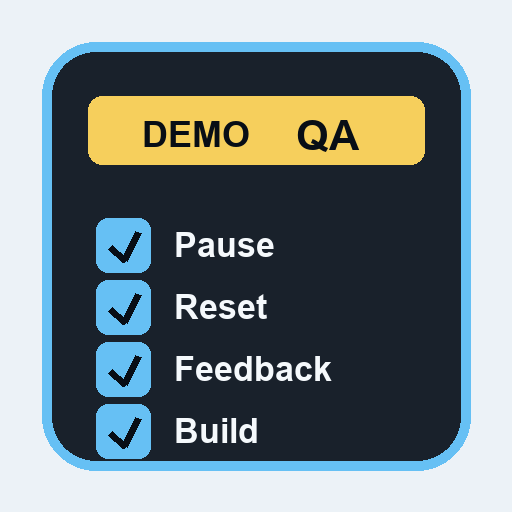
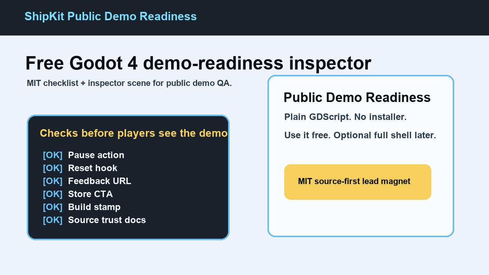

Wrapper checks
Confirm pause, reset, feedback, store CTA, and build stamp basics before a playtest, press build, festival build, or demo page goes public.

ShipKit Public Demo ReadinessA free Godot 4 checklist and lightweight inspector for pause, reset, feedback, store CTA, build stamp, and source-package trust basics.
MIT licensed. Plain Godot scenes, GDScript, and Markdown. No executable or installer.

Confirm pause, reset, feedback, store CTA, and build stamp basics before a playtest, press build, festival build, or demo page goes public.
Use the manifest, checksum, support policy, and security notes to inspect what the package contains before enabling it.
The free package is a checklist and inspector scene, not a full framework. Copy it into a blank project first if you want to inspect behavior.
The optional full kit adds ready-made pause, settings, input remap, reset confirmation, feedback, store CTA, controller-label, and build-stamp UI for Godot 4.2 through 4.6.x.
Download it free if you need to inspect fit first. Paid/supporter downloads are optional and help fund install docs, compatibility smoke tests, and small Godot compatibility fixes.
This free checklist does not include the full shell's pause menu, settings menu, input remapping, controller labels, reset confirmation UI, feedback button, or store CTA button. You do not need the full shell to use the free checklist.